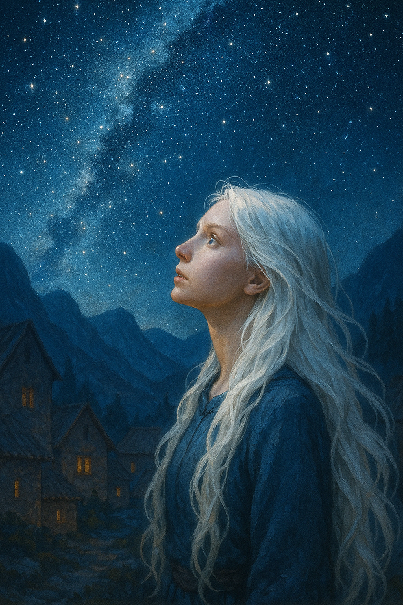
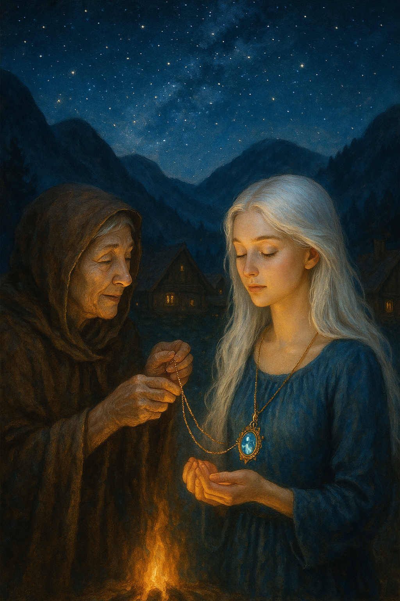

Na vila escondida nas montanhas, Luna sentia-se pela primeira vez verdadeiramente em casa. Entre pessoas que compartilhavam não só de sua aparência, mas também de uma energia mágica que vibrava suavemente no ar, ela descobriu um novo mundo — o mundo ao qual pertencia.
A anciã que a acolhera, chamada Míriam, revelou-lhe que os cabelos brancos eram marca dos Filhos da Luz, seres raros nascidos de uma linhagem celestial que, uma vez por geração, surgiam para restaurar o equilíbrio entre os reinos mágicos e o mundo dos humanos.
— Você carrega em si a centelha da aurora — disse Míriam, com olhos brilhando à luz da fogueira. — Quando as trevas tentam dominar, é você quem traz de volta a esperança.
Nos dias seguintes, Luna aprendeu com os anciãos sobre o antigo tratado que mantinha os mundos separados e protegidos. Mas agora, esse tratado estava se rompendo — a aparição da criatura híbrida era apenas o início. Outras portas entre os mundos estavam se abrindo, e forças perigosas vinham através delas.
Uma noite, enquanto contemplava o céu estrelado do alto da montanha, Luna teve uma visão: uma estrela cadente riscou o céu, deixando um rastro dourado. Mas não era uma estrela comum. Ela escutou uma voz suave, como um sussurro no vento:
— Siga o caminho das pedras flutuantes. Lá, a Guardiã do Tempo te espera...
Acordando de seu transe, Luna sabia que sua jornada ainda não havia terminado. A vila havia lhe dado respostas — mas agora, era hora de partir novamente, desta vez com propósito e coragem.
Míriam lhe entregou um colar antigo, com uma pedra azul que pulsava levemente.
— Este colar pertencia à sua mãe biológica. Ele brilhará quando estiver próxima da verdade.
Com o coração repleto de emoção e uma mochila carregada de mantimentos e esperança, Luna se despediu de sua nova família e partiu rumo ao desconhecido — em direção às terras esquecidas, onde o tempo não fluía como no resto do mundo e onde, segundo as lendas, as Memórias do Início estavam guardadas.
Era o começo de uma nova etapa: a busca pela Guardiã do Tempo… e por seu próprio destino.